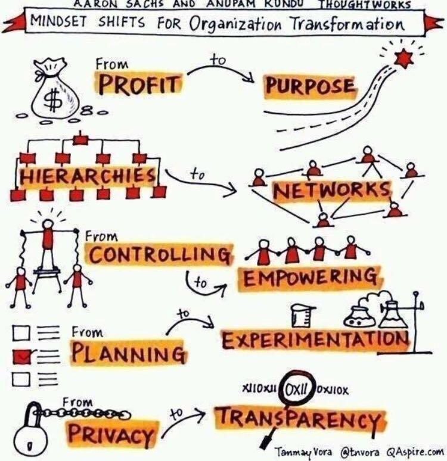
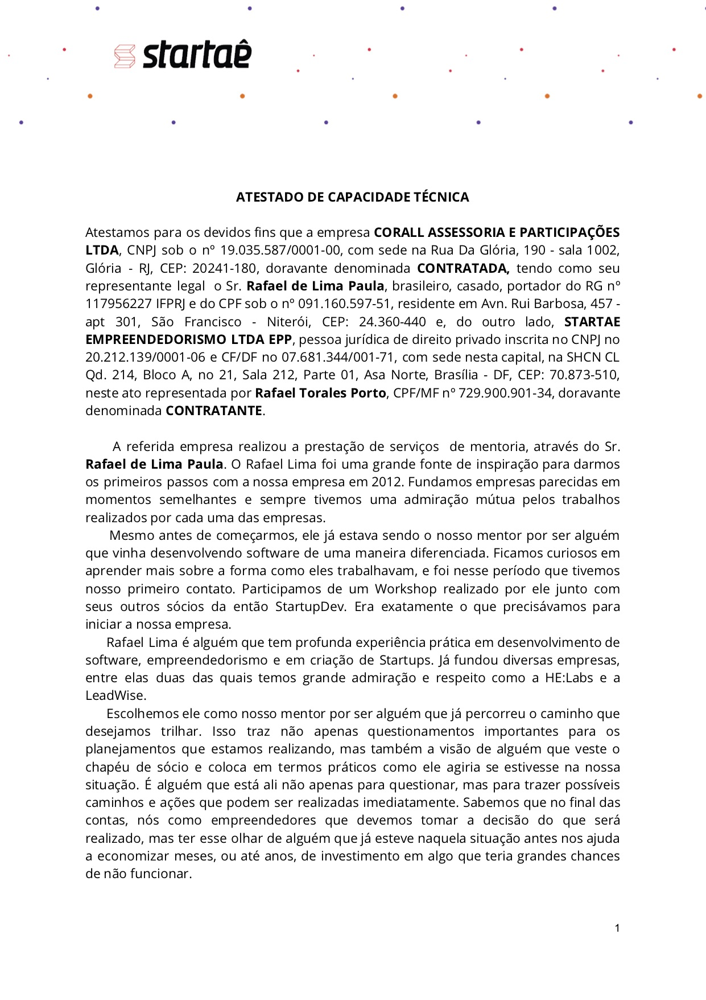
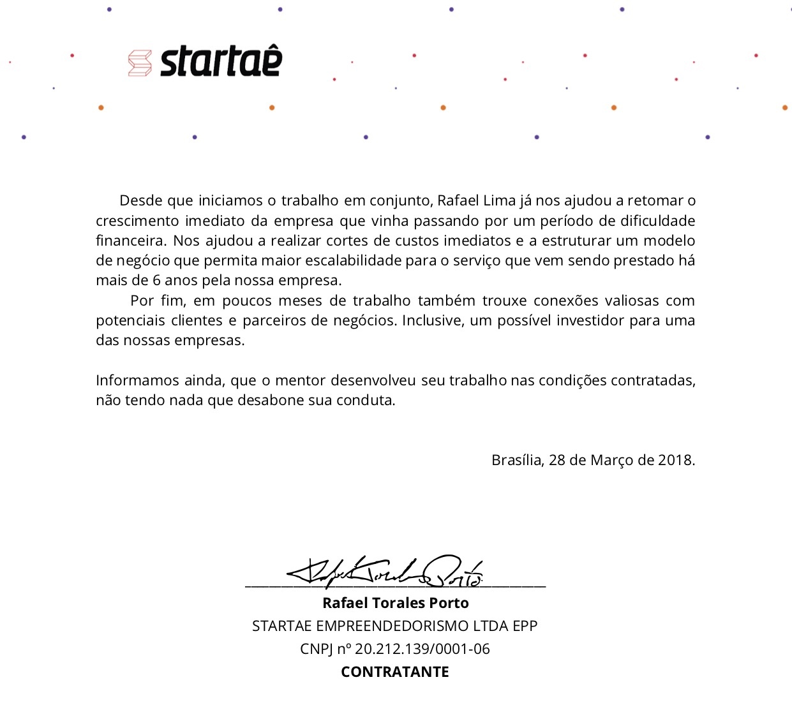

Como marketeiros podem acelerar o desenvolvimento da sua empresa em apenas 6 meses?
Leia tudo até o final que eu vou te explicar como desenvolver sua empresa para que ela trabalhe por você, tenha um valor de mercado e você consiga até mesmo vendê-la no futuro a ponto de não precisar mais trabalhar na vida.
Clique aqui se você já sabe do que se trata e deseja realizar a sua pré-inscrição.
(número de vagas abertas no momento: 2)
Você já aprendeu a ganhar dinheiro e agora sente a dor de organizar a sua empresa?
Se ainda não ganha dinheiro com seus produtos digitais, você está no lugar errado.
Por favor, deixe essa página e vá buscar os gurus de marketing digital.
Existem aos montes.
E eles vão te ajudar melhor no seu momento de vida.
Caso já tenha faturado um bom dinheiro, leia com atenção esse texto que ele é pra você.
Porque você está no momento em que não consegue mais resolver as coisas sozinho.
Você precisa começar a contratar...
Delegar algumas tarefas...
E fazer a gestão do time que está nascendo.
Não só do time, mas de todos os recursos:
Tempo.
Dinheiro.
Pessoas.
E rapidamente se vê trabalhando 14 horas por dia.
Sem conseguir dar conta de tudo que precisa fazer.
Ou que poderia fazer...
para crescer ainda mais o seu negócio.
Sabe porque isso acontece?
Porque o tamanho da sua empresa é limitado pela sua cabeça.
Vou apresentar 3 pontos relevantes e o primeiro é...
A cabeça dos marketeiros está muito limitada :(
Explico.
Eu sou empreendedor serial, já fundei algumas empresas e já até saí da operação de uma delas, me mantendo como sócio.
Mais difícil que construir uma empresa, é conseguir fazê-la funcionar sem o seu trabalho.
Na penúltima empresa que criei, conheci a comunidade dos marketeiros digitais e criadores de infoprodutos.
Foi uma experiência interessante.
Eu construí um infoproduto e em 4 meses de existência do negócio abri o carrinho.
Foi um sucesso, pelo que me disseram.
Esse meu primeiro lançamento foi de 7 dígitos, com um ROI de 20,71.
Sim!
Mais de um milhão de reais em faturamento em 7 dias e
ROI superior a 20.
Não foi bom!?
Pois é, eu não afirmaria isso somente com esses números.
Até porque esse ROI é calculado considerando apenas custo de marketing.
Com essa experiência eu percebi que o mindset desse mercado é limitado!
Não só por isso,
mas por outras questões que explico mais a frente.
Faturamento e ROI (considerando o investimento no marketing apenas) parecem ser bem relevantes nesse mercado.
O padrão dos marketeiros é:
Buscar 7 dígitos no primeiro lançamento...
Buscar faturar mais e pensar em uma esteira de produtos:
- front-end de baixo valor,
- middle para vender em massa e
- high com um valor alto para poucos.
Buscar ter uma base de fans cada vez maior...
Se tornar uma autoridade,
ser reconhecido...
Porque quanto mais seguidores de qualidade, maior o faturamento.
Não é isso?
E é aqui que entra o segundo ponto relevante:
Empresários com negócios que faturam dezenas de milhões de reais não pensam assim!
Nós empresários olhamos muito mais para o bottom line do que para o faturamento.
Você já ouviu falar em bottom line?
Esse termo significa o lucro ou resultado financeiro de uma operação.
Por exemplo, na minha operação o investimento em marketing foi baixo, mas rolou um investimento em equipe e produção mais relevante.
O ROI "real" foi um pouco superior a 5.
O que ainda é um excelente número.
Mas para analisar o negócio, precisamos saber qual foi o lucro líquido da operação.
Tivemos um lucro líquido de 33,34%
Já considerando retornar o investimento realizado.
Isso sim é um belo resultado sob a ótica de um empresário!
Fizemos o payback do investimento em 4 meses e ainda obtivemos um percentual de lucro bastante alto.
Agora sim, com essas informações, eu sou capaz de dizer que fomos bem sucedidos =)
Mas não é só o bottom line que importa.
Existem outras coisas que são muito mais relevantes e que os marketeiros digitais estão deixando de lado.
Eu faço parte de um grupo de empresários de alto nível que se reúne de tempos em tempos para trocar ideias.
Neste grupo estão os CEOs para o Brasil ou América Latina de empresas grandes como American Tower, Ânima, BRQ, Dafiti, Dolce & Gabbana, Embratel, GM, IBM, Monsanto, Schneider e mais...
Nos encontramos no Botanique, um hotel pós-luxo maravilhoso em Campos do Jordão.
Discutimos sobre vários assuntos, desde propósito até sustentabilidade.
É um ambiente muito rico que reúne mentes brilhantes que tem poder de melhorar o país.
Tenho aprendido bastante com esse grupo e em se tratando de inovação e tecnologia tenho colaborado bem.
Por essa e outras experiências, eu digo que nós empresários buscamos:
- Desenhar um modelo de negócio otimizado;
- Montar organizações exponenciais e escaláveis;
- Extrair alta margem de lucratividade;
- Estruturar times de alta performance;
- Montar uma cultura organizacional saudável;
- Definir e buscar um propósito maior;
- Buscar sustentabilidade como fator chave;
Essas são questões extremamente relevantes para quem deseja crescer.
Existe outra questão ainda mais importante.
Pra explicar, vou te contar uma história.
Eu fundei a BielSystems, minha primeira empresa, no ano de 2003...
Depois de bater cabeça durante 5 anos, fui trabalhar em uma empresa com dois grandes empresários, chamada Myfreecomm.
Escolhi a empresa por conta deles.
Nada além.
Fiquei lá por 3 anos.
Depois de aprender como eles pensavam, eu saí.
Conviver com eles foi fundamental para as minhas realizações futuras.
Porque eu pude captar a maneira de pensar,
e expandir a minha cabeça.
Ao sair montei um novo negócio chamado Startup DEV.
O Startup DEV foi super inovador,
saiu na Exame,
foi copiado por várias empresas,
Enfim, foi um grande sucesso.
Me gerou o ingresso na HE:labs que estava recém fundada na época.
A HE:labs chegou a ter um time de 80 pessoas,
Todas trabalham remotamente.
Tem uma cultura animal.
No escritório, uma piscina de bolinhas...
... um freezer da Heineken...
... um sófa barco.
Sim, um barco, dentro do escritório!
Muitos pufes, uma rede no teto pro pessoal deitar, um quarto com 8 camas, armário do Pacman, enfim...
É muito cool!
A gente chama isso de Ducaralhice
Medimos o índice de ducaralhice da empresa.
E fazemos isso porque prezamos pela cultura.
E pensamos em longo prazo.
Por tudo que fizemos, ela tem um bom valor de mercado,
e esse é o terceiro ponto relevante:
As empresas dos infoprodutores não valem nada sem eles.
O que isso quer dizer?
Antes de mais nada precisamos conversar sobre vender uma empresa.
Como dono e fundador, é sempre bom você ter a opção de vender a sua empresa.
Faturamento é bom.
Lucro é melhor.
Mas vender a sua empresa é ainda melhor.
O valor de uma empresa é diretamente proporcional à capacidade que ela tem de gerar lucro...
Mas a capacidade de lucrar não é o único fator.
Outro fator muito importante é:
O comprador da sua empresa consegue mantê-la fazendo dinheiro após a compra?
É isso que ele irá analisar.
Se você é o produto do seu negócio...
... isso quer dizer que a empresa só tem valor com você dentro dela :(
Sem você, a empresa não vale nada!
Duas coisas acontecem nesse caso:
- Você consegue até vendê-la, mas precisa continuar trabalhando por muitos anos, ou
- Você não consegue vendê-la porque o comprador percebe uma dependência muito grande em você.
Os dois cenários não são ideais...
Lembra que eu falei que sai da operação da minha empresa?
Isso quer dizer que eu consigo vendê-la,
colocar o dinheiro no bolso,
sem precisar mais trabalhar!
Não é lindo!?
Como empresário, é isso que você deveria buscar.
Parece distante ou difícil pra você?
E se eu te disser que vivi exatamente o que você vive agora?
É verdade.
Eu conheço profundamente esse problema.
E a saída para ele.
Eu posso te mostrar o caminho.
Prazer,
Meu nome é Rafael Lima.
Eu sou empreendedor serial e já fundei algumas empresas.
Sou também nômade digital e nos últimos 5 anos viajei na média mais de 4 meses por ano para o exterior...
... enquanto trabalhava e acompanhava as empresas!
Montei times que trabalham remotamente com produtividade ainda superior à de times convencionais.
Conquistei a liberdade financeira, geográfica e de tempo.
Em outras palavras,
não trabalho pela necessidade do dinheiro,
posso trabalhar de qualquer lugar do mundo e
monto minha agenda como eu quero, dia a dia.
Eu demorei 14 anos para conseguir chegar nesse ponto.
Deixei muito dinheiro na mesa.
Aprendi nos erros e acertos.
Mas agora sei como fazer pra organizar uma empresa que não dependa do meu trabalho.
Você deseja desenvolver sua empresa, montar um time remoto e trabalhar de qualquer lugar do mundo a qualquer hora?
A boa notícia é que você pode!
E não precisa demorar tanto tempo como eu.
Recentemente resolvi criar o meu próprio grupo de Mentoria.
Com um único propósito:
Ajudar os marketeiros a se tornarem empresários bem sucedidos.
Se você já fez alguns lançamentos, montou sua esteira de produtos, lead magnets, perpétuo, etc, esse grupo é para você.
Eu imagino que:
Você já deixou de trabalhar sozinho.
Você possui um time pequeno.
Você quer crescer.
Você precisa crescer.
Você tem o desafio de estruturar uma empresa.
Você sabe que precisa se rodear de empresários bem sucedidos.
Se eu estou certo,
você então é um candidato a participar do meu grupo de mentoria!
O que é a Mentoria?
A mentoria é minha proposta para te ajudar a traçar as estratégias certas para o momento da sua empresa da mesma forma que eu fiz com minhas empresas e minha vida.
Perceba que minha experiência é com negócios digitais, SaaS, Infoprodutos, Serviços B2B e Serviços B2C. Se o seu negócio se enquadra em algum destes casos, eu posso te ajudar.
Um grupo de mentoria como esse vale mais que um MBA em uma escola técnica.
Traz a mentalidade das empresas do futuro.
O grupo é pautado em empresas que valorizam os valores à direita do gráfico.

Leia ANTES de se aplicar
A afiliação à mentoria é somente para convidados, e é aberta apenas algumas vezes ao ano. Com isso em mente, seguem algumas coisas para considerar antes de se aplicar:
Tenho uma política forte de transparência. Todos os participantes do grupo estão dispostos a colaborar, abrir os números e apresentar a situação real da empresa para que possamos fazer análises e definir estratégias que podem realmente resolver todos os gargalos atuais.
Selecionamos pessoas com maturidade de negócio, ou seja, o grupo é composto por donos de negócios estabelecidos, que já tenham faturamento regular. Se você está na fase de ideias e não é capaz de gerar um retorno sobre o investimento da sua afiliação, por favor não se inscreva.
No longo prazo, nosso objetivo é que sua empresa prospere.
Se você ainda está lendo esse texto, posso assumir com segurança que você está bastante interessado em entrar nesse grupo, então vamos falar sobre como é participar da mentoria
Como funciona a dinâmica da mentoria?
O grupo se mantém conectado a todo momento.
Criamos um grupo no Whatsapp onde todos podem trocar ideias.
E pedir ajuda em momentos difíceis.
Como esse tipo de trabalho precisa ser muito próximo e com uma ATENÇÃO DEDICADA para ser efetivo, esse Programa conta não com 1, mas sim com 2 Videoconferências Mensais ao longo de 6 meses.
Nessas Videoconferências eu tiro todas as dúvidas de cada Participante 1 a 1 em seu turno, e o restante do Grupo fica como ouvinte aprendendo a cada salto de cada integrante. Em cada Encontro todos do Grupo podem participar ativamente e trazer suas questões e desafios.
As reuniões ficam gravadas e disponíveis para todos os participantes durante o período da vigência da mentoria.
O formato da entrega é em grupo, mas a atenção que eu dou para cada Participante é individual... Eu e você. Por isso o Grupo é heterogêneo e pode ter pessoas de níveis distintos... Pessoas com negócios faturando alguns milhares de reais ou já na marca de milhões anuais.
Existem algumas REGRAS no grupo
Comprometimento
Todos os participantes estão realmente comprometidos com seus resultados e com sua transformação pessoal como empresário. A participação em todas as reuniões bem como nos workshops e aulas on-line é requerida. Ao entrar para o grupo você se compromete a participar de todas as reuniões.
Coachability
Coachability é a capacidade que uma pessoa tem de receber um feedback e usá-lo para melhorar sua performance. Todos os mentorados irão empreender esforços para melhorar seus hábitos, comportamentos e decisões a partir dos feedbacks recebidos na mentoria.
Confidencialidade
Todas as informações compartilhadas no grupo são confidenciais e para uso do grupo apenas. Compartilhar informações confidenciais é estritamente proibido. Você não pode usar as informações confidenciais divulgadas no grupo para ensinar outras pessoas ou montar um curso especial. Qualquer membro que violar essa regra será banido e não terá seu dinheiro de volta.
Convidados
Não são permitidos convidados além dos que estiverem inscritos no grupo. Você não pode compartilhar seu acesso e nem convidar outras pessoas para participarem das reuniões junto com você. O grupo é fechado somente para membros.
Respeito
Todas as iterações entre os membros são baseadas em um alto nível de respeito. Opiniões divergente não podem ser motivos para discussões e desentendimentos. Prezados pela divergência de opiniões e focamos em aprender com as diferenças.
Como você entra para o grupo?
A afiliação à mentoria é avaliada sob os seguintes critérios:
- O quanto você está disposto e precisando da mentoria para alavancar seu negócio;
- Qual o seu tipo de negócio e o quanto você vai poder se aproveitar da mentoria;
- O nível de match entre o seu perfil e o meu perfil;
O primeiro passo é fazer a aplicação respondendo uma série de perguntas.
Só vou saber exatamente em que momento você está depois de ler sua Aplicação, mas é provável que hoje o Grupo de Mentoria já conte com pessoas em níveis mais avançados que o seu e com outras ainda em níveis mais iniciantes que o seu. E está tudo bem porque, como eu disse antes, a atenção que você vai receber é individual.
Posteriormente teremos um bate-papo online para nos conhecermos melhor. Se você foi convidado por mim, essa etapa não será necessária.
Qualquer dúvida, fique à vontade para falar comigo.
Clique agora em Continuar para submeter a sua aplicação.
Você será aprovado caso atenda às seguintes exigências:
Já faturou e ganhour dinheiro com clientes diretos.
Possui um time de no mínimo 3 pessoas.
Está comprometido em desenvolver uma empresa.
Deseja montar um time e contratar pessoas.
Está disposto a compartilhar fracassos e sucessos com os demais participantes.
Está comprometido com os valores do grupo.
Consegue retornar o investimento na mentoria com seu faturamento atual.
Se por acaso você passar pelas exigências e for aceito no grupo, essa experiência provavelmente mudará a sua vida para sempre.
Eu realmente espero que isso aconteça!
Um abraço,


P.S.
Lembre-se que você tem a chance de economizar alguns anos da sua vida, agora.
Eu vou poder te ajudar de diversas formas:
- definir a melhor estratégia para a sua empresa;
- trazer insight sobre a sua área de atuação;
- trabalhar melhor o modelo de negócios;
- viabilizar contatos com possíveis parceiros e clientes;
- preparar a empresa para um investimento;
- aumentar a rede de networking dos sócios;
- ajudar nos processos e na execução;
- discutir sobre comercial, marketing, finanças, rh, gestão e demais assuntos inerentes a tocar uma empresa;
Veja na carta escrita pelo Startaê, o que eles têm a dizer sobre a minha mentoria.


Perguntas Frequentes
Quando são os encontros?
São 2 encontros online e ao vivo por mês, um a cada 15 dias com duração de 1 hora, começando às 20h.
Quantas empresas fazem a mentoria?
Hoje o grupo é composto por 4 empresas selecionadas com similaridade de perfil e situação empresarial.
Como sei se tenho o perfil para participar?
Como regra geral, sua empresa precisa já ter faturado e seu time precisa ter no mínimo 3 pessoas. Mas eu abro excessão para as pessoas que possuem algum skill específico que é de interesse do grupo.
Quanto tempo vai demorar para eu ter o resultado da minha aplicação?
A aplicação é revisada em geral em 1 dia, mas por favor aguarde até 3 dias úteis para aprovação.
Minha empresa é bem sucedida, mas não é uma empresa digital, posso participar?
SIM! Esse grupo de mentoria é sobre montar negócios prósperos. Ponto.
Não importa a natureza da sua empresa, você poderá aproveitar a experiência desta mentoria.
Depoimento do Resultado em um caso Real
O Henrique Morais explica legal os benefícios da mentoria para a wee!
Clique aqui para se inscrever → (número de vagas abertas no momento: 2)